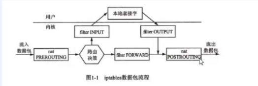
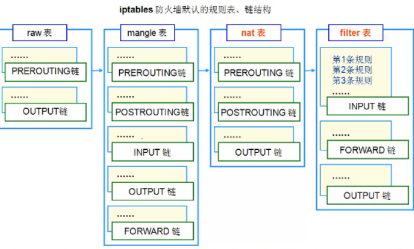
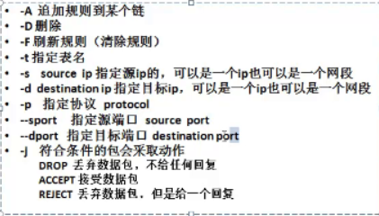

IPTABLES 防火墙
Linux防火墙基础
Linux防火墙概述
Linux系统的防火墙功能都是由内核实现的
- 2.0版本内核中，包过滤机制是ipfw ,管理工具是ipfwadm
- 2.2版内核中，包过滤机制是ipchain，管理工具是ipchains
- 2.4版以及以后的内核中，包过滤机制是netfilter，管理工具是iptables
- 管理工具是往netfilter里传递策略或者指令的
- 内核是一个软件 —-》真正干活的
- iptables也是一个软件—》和人打交道的
netfilter
- 位于Linux内核中的包过滤防火墙功能体系
- 称为Linux防火墙的”内核态“
iptables
- 位于/sbin/iptables,是用来管理防火墙的命令工具
- 为防火墙体系提供过滤规则/策略，决定如何过滤或处理到达防火墙主机的数据包
- 称为Linux防火墙的“用户态”
包过滤防火墙工作在TCP/IP的网络层
- 默认情况下iptables不支持应用层的过滤，不能直接过滤http,ftp、QQ等
- 支持mac地址、ip地址、端口号过滤、tcp、UDP、ARP、ICMP等协议
- 支持网络层、传输层、数据链路层等的协议
- 默认情况下iptables不支持应用层的过滤，不能直接过滤http,ftp、QQ等
防火墙
- 硬件防火墙
- 本质上还是Linux内核的netfilter+iptables+独立研发的芯片和软件。
- 价格贵，性能好
- 软件防火墙—》iptables
- 硬件防火墙

iptables的规则表、链结构
规则链
- 规则的作用在于对数据包进行过滤或处理，根据处理的时机的不同，各种规则被组织在不同的“链”中
- 规则链式防火墙规则/策略的集合
默认5种规则链
- INPUT链：处理入站数据包
- 限制访问本机服务的
- OUTPUT链：处理出站数据包
- FORWARD链：处理转发数据包
- 限制别人上网的（路由功能）
- POSTROUTING链：在进行路由选择后处理数据包
- PREROUTING链：在进行路由选择前处理数据包
- INPUT链：处理入站数据包
规则表
- 具有某一类相似用途的防火墙规则，按照不同处理实际区分到不同的规则链以后，被归置到不同的“表”中
- 规则表是规则链的集合
默认的4的规则表
- raw表:确定事都对该数据包进行状态跟踪
- mangle表：为数据包设置标记
- nat表：修改数据包中的源、目标IP地址或端口
- filter表：确认是否方向该数据包（过滤）

数据包过滤匹配流程
管理和设置iptables规则
iptables的基本语法格式
管理iptables规则
设置规则内容
- -A:在链尾追加一条新的规则
- -I：在指定位置（或是）链首插入一条新的规则,没有指定默认插在链首
- -R：修改、替换指定位置或内容的规则
- -P：设置指定链的默认策略 policy
- -p:指定协议 protocol
列表查看规则
-L：列表查看各条规则信息
–line-numbers：查看规则信息时显示规则的行号
-n：以数字形式显示IP地址、端口等信息
-v：显示数据包个数、字节数等详细信息
1
2
3
4
5
6[root@localhost ~]# iptables -L --line-num -n -v
Chain INPUT (policy DROP 0 packets, 0 bytes)
num pkts bytes target prot opt in out source destination
1 56 8241 ACCEPT udp -- * * 0.0.0.0/0 0.0.0.0/0
2 4 336 ACCEPT icmp -- * * 0.0.0.0/0 0.0.0.0/0
3 765 45484 ACCEPT tcp -- * * 0.0.0.0/0 0.0.0.0/0
清除规则
- -D：删除指定位置或内容的规则
- -F：清除规则链内的所有规则 flush
自定义规则链
- -N：创建一条新的规则链
- -X：删除自定义的规则链
其他
- -h:查看iptables命令的使用帮助
规则执行的顺序
- 首先看第一条规则，如果符合要求，就执行
- 符合第二条规则就执行相关动作（ACCEPT 或者DROP），如果还不匹配，就看第3条
- 在都不匹配的情况下，看默认规则
条件匹配
数据包控制
选项
- 